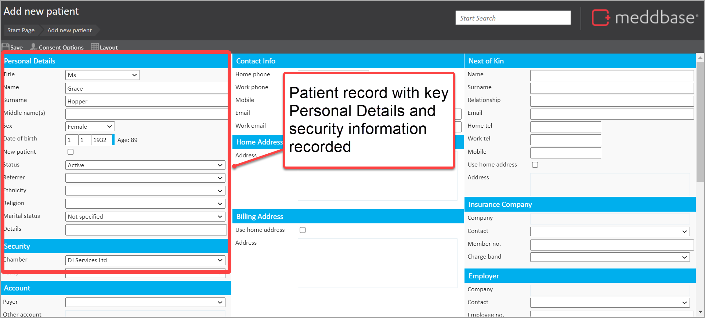
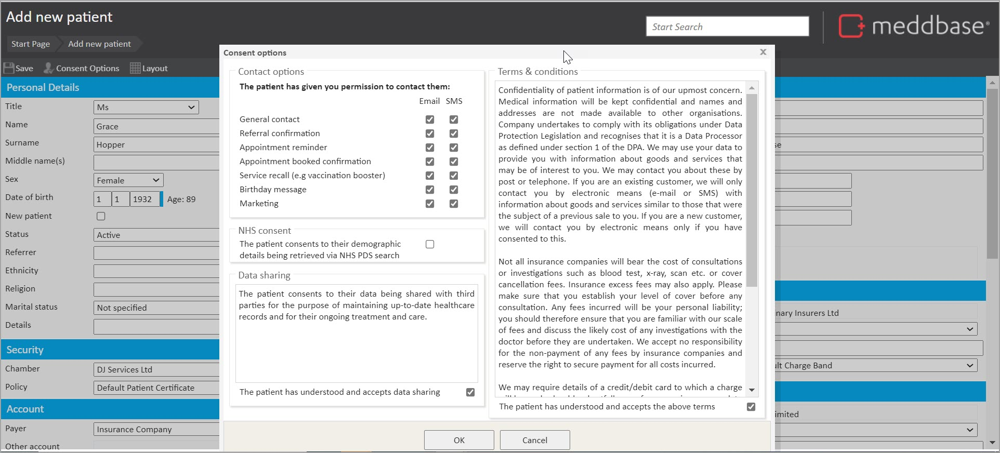
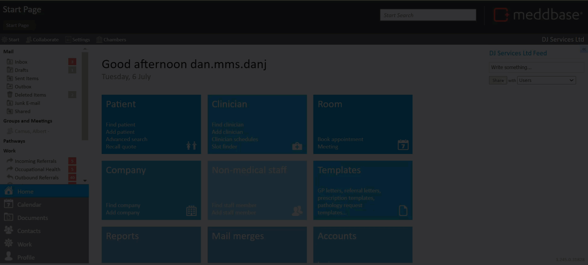

This article guides you on how to add (register) a patient record, outlines the minimum data needed to add a patient record and further data that can be added for a patient record. Lastly, the article presents a short end to end demo of the process for adding a patient record.
To add a patient record:
1. Log into Meddbase
2. Go to Start Page > Patient > Add a Patient.
The Add new patient page is displayed.
3. In the Personal Details section, add in details such as Name, Surname, Sex and Date of Birth
4. In the Security section, add in a Policy from the selection list

The minimum data needed for patient registration is:
- First Name
- Last Name
- Sex
- Date of Birth (Unless otherwise specified in the application configuration)
- Policy
5. Add in further data for the patient record (such as the Payer, Mobile, Email, Address, Next of Kin, Employer, Insurer, Referrer) as needed
6. Click on Save.
The Consent options dialogue is presented. This allows you to record permissions and consents provided by the patient. It also enables you to record the patient's acceptance of the Terms & Conditions.
7. Tick the relevant boxes

8. Click on OK
The patient record is saved.
Depending on the registration requirements and information available, there will be additional details you may need to record for the patient beyond those described above. These options are summarised in the table below.
| Section | What you can do |
| Personal Details | Add in further details to that described above for the Referrer, Ethnicity, Religion and Marital Status for the patient. |
| Accounts | Click on the downward arrow beside Payer to enter the payment information (if the patient's bills are to be paid by an external employer or insurance company.) Add in further details beyond the payer. Including a change to the Billing company and Patient charge band. |
| Specialist / GP | Click on GP to search for a GP record. Click on Specialist to search for a specialist record. |
| NHS Details | Add in NHS information such as NHS surgery and NHS GP. These details, as with others for the patient record can be used in relevant document templates. |
| Contact Info. | Enter a Mobile Number if you need to send the patient SMS (Text Message) notifications and messages. Enter an Email Address if you need to send the patient email notifications and messages |
| Home Address | Click on the Address field and in the Home Address dialogue that appears, input the Address. Then click on OK. |
| Billing Address | If billing address is the same as the home address, tick Use home address. Alternatively, click on the Address field and follow similar steps as those for selecting the Home Address. |
| Next of Kin | Add Name, Surname, Relationship and other fields as required. |
| Insurance Company | Click on the Company field, then select Change from the menu that appears. Search for the Insurer via the dialogue. Alternatively, you can add the Insurer. Add in a Contact and choose the Charge band for the insurer. |
| Employer | Click on the Company field, then select Change from the menu that appears. Search for the Employer via the dialogue. Alternatively, you can add the Employer. Add in a Contact and choose the Charge band for the employer. |
| School | Record similar values following a similar process to that for Insurance company. |
| Legal | Record similar values following a similar process to that for Insurance company. |
| Employee Details | Select the Employee type and Employee status. Select the Department and Division. Both of which are relevant in the context of Occupational Health and the access control for managers |
| Driving License | Record driver's license information including license number, state of issuance, expiration date and license class/type. |
This short video presents an end-to-end demonstration of the steps for adding a new patient record to Meddbase.
